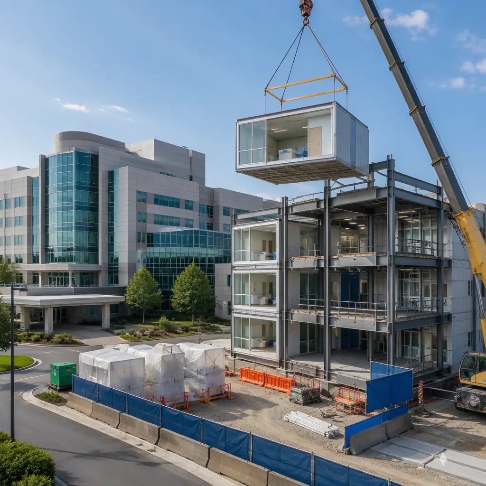
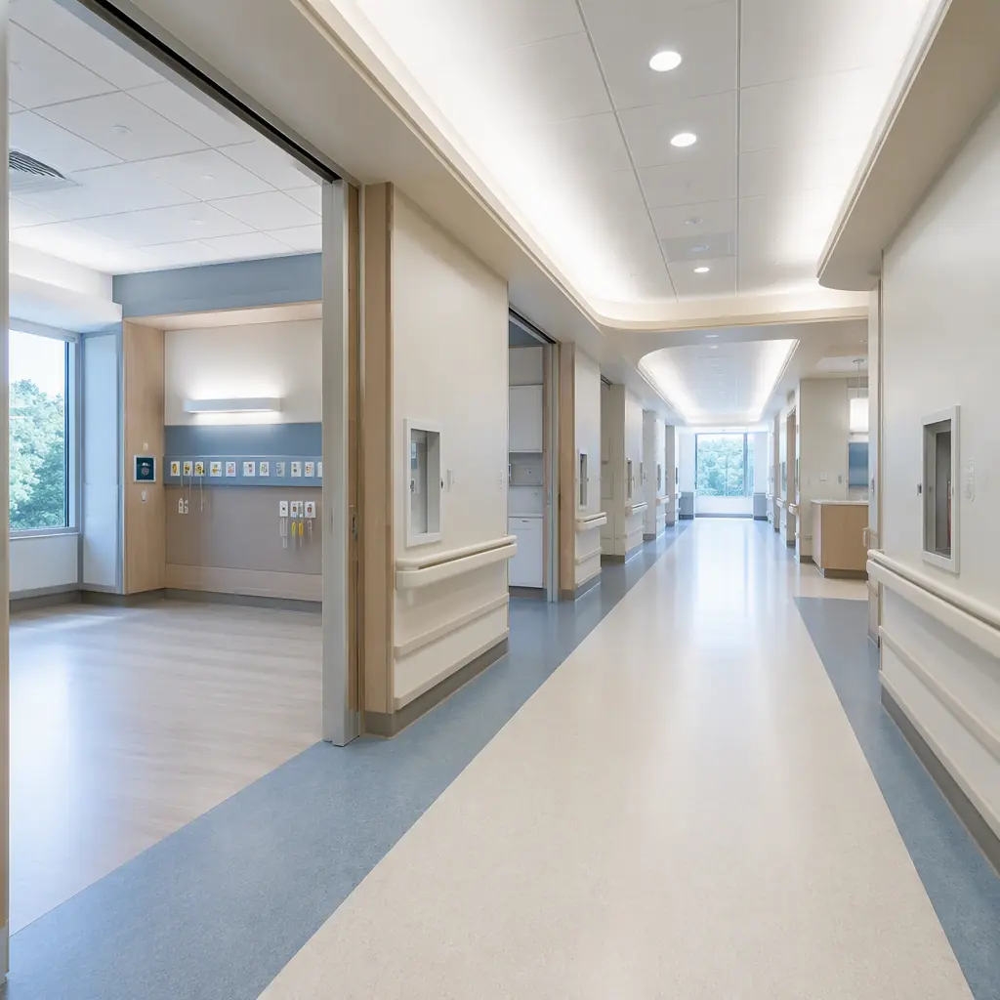

Hospital expansion is construction's hardest problem: you are building a complex, MEP-intensive facility within meters of operating rooms, ICUs, and immunocompromised patients who cannot tolerate dust, vibration, or utility interruptions. A conventional site-built hospital wing expansion adjacent to an active facility requires 18-24 months of construction directly next to patient care areas, with ICRA Class IV containment protocols, negative air pressure barriers, and constant vibration monitoring that adds $8-12/sq ft per month in temporary containment costs alone. Modular construction fundamentally changes this equation by moving 80% of the construction activity off-site to a factory, reducing on-site duration to 4-6 months of foundation work and module setting—and cutting patient-adjacent construction activity by approximately 70%. For the baseline economics of modular hospital construction, see our hospital cost breakdown.

ICRA Compliance: Infection Control During Active Hospital Expansion
The Infection Control Risk Assessment (ICRA) is the governing document for any construction activity in an occupied healthcare facility. A hospital expansion adjacent to active patient care areas is classified as ICRA Class IV—the highest risk category—requiring hard-wall barriers with negative air pressure, HEPA-filtered exhaust, sealed utility penetrations, and continuous particulate monitoring at the barrier perimeter. For a conventional 18-month site-built expansion, the ICRA containment system alone costs $250,000-400,000 to install and maintain.
Modular construction compresses the ICRA window dramatically. Because the modules arrive with interior finishes, MEP systems, and even medical equipment rough-ins already installed, the on-site phase shifts from "construction" to "assembly." The ICRA Class IV containment is only required during the 8-12 week module-setting and utility-connection phase, not the full 18-month construction duration. This reduces ICRA containment costs by 50-65% and, more importantly, reduces the duration that patients and staff experience construction-adjacent conditions. Our healthcare construction overview covers ICRA protocols for new-build hospital projects.
Dust and particulate control. For a deeper look, our modular hospital construction — buildin… guide covers the details. Factory-built modules eliminate the three largest sources of construction dust in hospital environments: drywall finishing (sanding generates respirable silica), concrete cutting (crystalline silica), and ductwork fabrication (metal particulate). Module interiors are completed in the factory under controlled conditions with HEPA-filtered ventilation. On site, the primary particulate sources are limited to foundation excavation and crane operations—both of which are external to the building envelope and separated from patient areas by the existing facility's exterior wall.
Phased MEP Cutover: Keeping the Existing Hospital Running
The single highest-risk moment in any hospital expansion is MEP cutover—the point at which the new wing's mechanical, electrical, and plumbing systems connect to the existing hospital's central plant. A botched cutover can interrupt medical gas (oxygen, vacuum, medical air), knock out emergency power circuits, or depressurize the existing building's HVAC cascade, compromising the positive-pressure relationship between operating rooms and adjacent spaces.
Modular construction reduces MEP cutover risk through factory pre-commissioning. Each module's MEP systems are pressure-tested, electrically commissioned, and balanced in the factory before delivery. The medical gas piping is purged, pressure-tested at 150 psi, and certified clean for oxygen service at the factory. When the module arrives on site, the MEP connections are reduced to a small number of tie-in points at the module-to-module and module-to-existing-building interfaces.
The phased cutover sequence for a modular hospital wing typically follows this pattern:
- Phase 1 — Site utilities. New water, sewer, and electrical services are brought to the expansion footprint from the street, independent of the existing hospital's services. No interruption to current operations.
- Phase 2 — Module-to-module connections. Adjacent modules are connected to each other at pre-engineered MEP manifold points within the expansion wing itself. Still no connection to the existing hospital.
- Phase 3 — Central plant tie-in (scheduled outage). The new wing's chilled water, steam, and emergency power connections are made to the existing central plant during a 4-6 hour scheduled outage window, typically on a weekend with reduced surgical schedule. The short duration is possible because all internal distribution within the new wing is pre-tested—only the final connection points require field work.
- Phase 4 — Medical gas certification. Medical gas systems are cross-connected and re-certified by a third-party ASSE 6010-qualified inspector. The existing hospital's medical gas supply is not interrupted during this process because the new wing is isolated by valves until certification is complete.
For a detailed treatment of MEP integration in modular buildings, our MEP systems guide covers the technical framework across all building types.

Structural Integration: Connecting New Modules to Existing Buildings
Connecting a new modular wing to an existing hospital building introduces structural challenges that do not exist in greenfield construction. The existing building and the new wing will have different foundation systems, different structural frames (potentially different materials—steel modular connecting to concrete existing), and different settlement characteristics. The connection detail must accommodate differential movement while maintaining fire separation, smoke control, and waterproofing integrity.
The standard approach uses a seismic expansion joint at the interface between the existing building and the new modular wing. The joint is designed to accommodate up to 4 inches of differential movement in any direction (seismic drift + long-term settlement + thermal expansion) while maintaining a 2-hour fire rating and continuous smoke seal. The modular wing's structural frame is designed with the same lateral system (typically steel moment frames or braced frames) as the existing building, ensuring compatible drift characteristics during a seismic event.
Foundation coordination. The modular wing's foundation must be designed to avoid undermining the existing building's footings. This typically requires the new foundation to bear at the same depth as or deeper than the existing footings, with the excavation sequenced in alternating 8-foot sections (underpinning pits) to prevent loss of lateral support to the existing foundation. This is standard geotechnical practice for any hospital expansion, not unique to modular, but modular's lighter structural weight (steel frame versus concrete) reduces foundation loads by 25-30%, simplifying the underpinning design. For foundation system options, see our foundation systems guide.
Noise and Vibration Management: Protecting Patient Care During Crane Operations
The most visible difference between modular and conventional hospital expansion is the crane. Setting 30,000-50,000 lb modules with a 300-ton mobile crane is not a subtle operation, and it occurs within 50-100 feet of patient rooms, operating suites, and diagnostic imaging equipment that is sensitive to vibration.
Vibration management for modular hospital expansions follows a structured protocol:
- Pre-construction vibration survey. Baseline vibration measurements are taken at 15-20 locations throughout the existing hospital, including operating rooms, MRI suites (which have the strictest vibration criteria at 2,000 micro-inches/sec for Siemens and GE magnets), NICUs, and patient rooms adjacent to the expansion footprint. These baselines establish the thresholds that crane operations must not exceed.
- Crane mat design. The crane outrigger pads are designed to distribute ground pressure below the threshold that would propagate vibration to the existing building foundation. For a 300-ton crane, this typically requires 8-foot by 8-foot timber crane mats over compacted aggregate, with ground pressure limited to 2,500 psf at the outrigger.
- Module weight reduction during lifts. Modules are lifted without interior finishes in patient-care-sensitive areas, reducing lift weight by 15-20% and correspondingly reducing ground pressure and vibration propagation. Finishes are installed after the module is set, using the module interior as a weather-protected workspace.
- Scheduled lift windows. Module lifts are scheduled during pre-communicated windows when vibration-sensitive procedures are not in progress. For MRI suites, lifts are scheduled during the MRI's daily calibration window or after-hours. Our crane logistics guide details the full planning framework.
Noise monitoring. For a deeper look, our modular veterinary clinics — building a… guide covers the details. Continuous noise monitoring at the hospital perimeter typically shows that modular expansion generates 65-72 dBA at 50 feet during crane operations, versus 78-85 dBA continuously for conventional construction (hammering, concrete pumping, truck traffic). The shorter duration of noise exposure is the key difference: 4-6 months of intermittent crane noise versus 18-24 months of continuous construction noise.
Case Profile: 40-Bed Inpatient Wing Expansion Adjacent to Active Surgical Floor
Consider a 200-bed regional hospital adding a 40-bed inpatient wing on a constrained urban site immediately adjacent to the existing surgical floor (4 operating rooms, 2 procedure rooms). The expansion must connect to the existing hospital at two levels (ground floor for patient transport, second floor for staff corridor) and maintain full surgical schedule throughout construction.
Under a conventional approach, the surgical floor would require ICRA Class IV containment for the full 20-month construction period, with negative air pressure barriers in the corridor connecting to the expansion, continuous particulate monitoring, and a construction schedule that works around surgical hours—effectively limiting productive construction to 6 hours per day (6 PM to midnight). The project would cost approximately $22 million at $550/sq ft for 40,000 sq ft, with $380,000 in ICRA containment costs and an estimated $1.2 million in surgical revenue displacement from reduced OR availability during peak construction phases.
Under a modular approach, the same 40-bed wing is fabricated as 32 steel-frame modules (each module = 2 patient rooms with bathroom, nurse station alcove, and MEP riser) in a factory 200 miles from the site. Factory production takes 14 weeks. On site, the foundation and utility rough-ins proceed for 10 weeks concurrently with factory production. Module setting takes 4 weeks (4 modules per day over 8 lift days). MEP tie-in and interior completion takes 8 weeks. Total on-site duration: 22 weeks versus 80 weeks for conventional. ICRA containment required for 12 weeks (module setting + MEP tie-in) versus 80 weeks, reducing containment costs to approximately $65,000. Surgical revenue displacement is approximately $180,000 versus $1.2 million, because crane lifts are scheduled on weekends with reduced surgical volume.
Total modular cost: approximately $18.5 million ($462/sq ft), including factory production, transportation, crane, and site work. The $3.5 million savings versus conventional comes from three sources: 58-week shorter general conditions ($850,000), reduced ICRA containment ($315,000), and factory production efficiency eliminating trade stacking and weather delays. For a broader assessment of modular versus conventional construction economics, our traditional comparison guide provides the full framework.